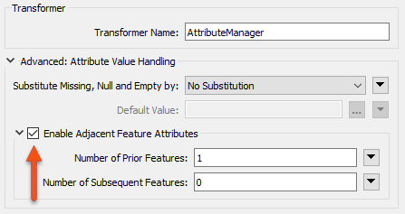
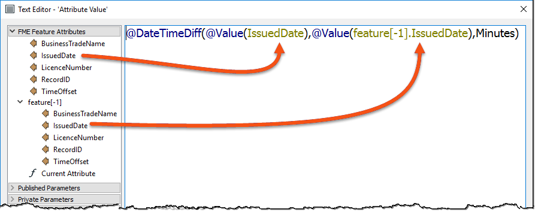

Check out this blog post for a more complex example using the Text File reader.
After completing this lesson, you’ll be able to:
Usually, a feature in FME is self-contained. It might get processed as a group at some point, but other than that, it doesn’t relate to other features in the workspace.
However, in some cases, the ability of a feature to access the attributes of other features is quite helpful.
For example, take a tabular dataset of coordinates recorded as follows:
| X | Y |
|---|---|
| +0.0 | +3.0 |
| +3.2 | +0.0 |
| -3.2 | +0.0 |
| +0.0 | +3.4 |
| +4.2 | +0.0 |
In this case, each row is not an absolute coordinate but an offset from the previous one. Therefore, to calculate the actual coordinates, each feature needs to know the coordinates of the previous feature to apply the offset.
You can use adjacent feature attributes in FME to calculate the actual coordinates with a dataset like this.
Check out this blog post for a more complex example using the Text File reader.
Adjacent feature functionality is activated by checking the box labeled Enable Adjacent Feature Attributes in an AttributeCreator or AttributeManager transformer:

This opens up a section of dialog in which the author can specify how many features preceding or succeeding the current feature to make available. In the above screenshot, attributes from the previous feature will become available.
The simplest way to make use of the attributes retrieved from prior/subsequent features is through the Text or Arithmetic Editors, where the list of feature attributes has an expandable section for prior and subsequent features:

Attributes become available not only for the current feature but also for previous/subsequent features that have been exposed. As with the current attribute, double-clicking an adjacent attribute adds it to the expression window:

In the screenshot above, the workspace author finds the time difference between two adjacent records in a business license dataset.
You can see that prior attribute values can be accessed using feature[-x], where x is a positive or negative number that refers to a subsequent or prior feature.
Be aware that extra system resources are used to store adjacent features. Therefore, translation performance will take a (relatively minor) hit when using these capabilities, the degree of which depends on the number of features and attributes being retained.
The AttributeCreator and AttributeManager also have the option to specify what should happen if the attributes have missing, null, or empty values:

When the transformer tries to use a missing, null, or empty value, this option lets the user choose a replacement value or carry out no substitution.
Notice that this setting applies to attributes of the current feature just as much as attributes of adjacent features.
You can read more details about this substitution in the documentation.